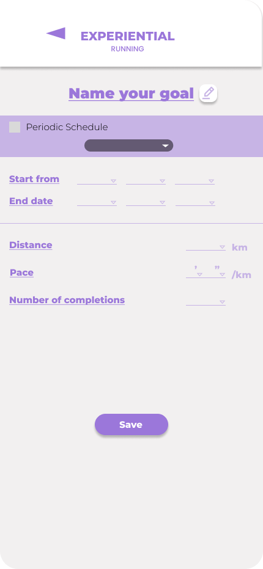

See how far you've come by checking the history tab. See an overview of your progress and check specific dates on your running journey.


Use Experiential Running to motivate yourself to get better by setting your own goals. Goals can be either distance and time related, such as running 15 km per week, or set goals to complete certain challenges. You can even set goals to beat a friend in ghost run.
See the overview of your goals and how far you have progressed.
See how far you've come by checking the history tab. See an overview of your progress and check specific dates on your running journey.